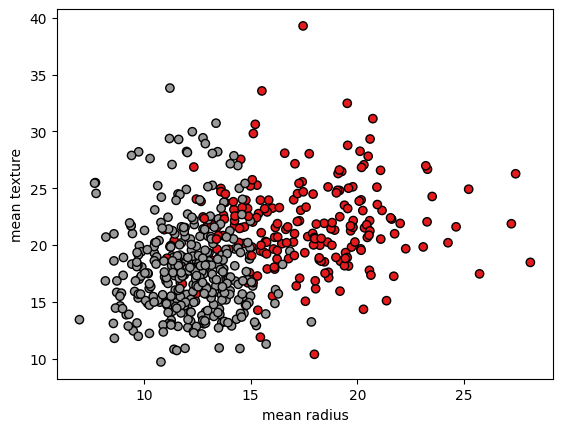

Installation of Packages
Contents
Installation of Packages#
First install packages like numpy, scikit-learn, matplotlib
!pip install numpy scikit-learn matplotlib
Requirement already satisfied: numpy in /home/john/contributions/.venv/lib/python3.10/site-packages (1.23.2)
Requirement already satisfied: scikit-learn in /home/john/contributions/.venv/lib/python3.10/site-packages (1.1.2)
Requirement already satisfied: matplotlib in /home/john/contributions/.venv/lib/python3.10/site-packages (3.6.1)
Requirement already satisfied: scipy>=1.3.2 in /home/john/contributions/.venv/lib/python3.10/site-packages (from scikit-learn) (1.9.1)
Requirement already satisfied: joblib>=1.0.0 in /home/john/contributions/.venv/lib/python3.10/site-packages (from scikit-learn) (1.1.0)
Requirement already satisfied: threadpoolctl>=2.0.0 in /home/john/contributions/.venv/lib/python3.10/site-packages (from scikit-learn) (3.1.0)
Requirement already satisfied: packaging>=20.0 in /home/john/contributions/.venv/lib/python3.10/site-packages (from matplotlib) (21.3)
Requirement already satisfied: pillow>=6.2.0 in /home/john/contributions/.venv/lib/python3.10/site-packages (from matplotlib) (9.2.0)
Requirement already satisfied: python-dateutil>=2.7 in /home/john/contributions/.venv/lib/python3.10/site-packages (from matplotlib) (2.8.2)
Requirement already satisfied: kiwisolver>=1.0.1 in /home/john/contributions/.venv/lib/python3.10/site-packages (from matplotlib) (1.4.4)
Requirement already satisfied: fonttools>=4.22.0 in /home/john/contributions/.venv/lib/python3.10/site-packages (from matplotlib) (4.37.4)
Requirement already satisfied: pyparsing>=2.2.1 in /home/john/contributions/.venv/lib/python3.10/site-packages (from matplotlib) (3.0.9)
Requirement already satisfied: contourpy>=1.0.1 in /home/john/contributions/.venv/lib/python3.10/site-packages (from matplotlib) (1.0.5)
Requirement already satisfied: cycler>=0.10 in /home/john/contributions/.venv/lib/python3.10/site-packages (from matplotlib) (0.11.0)
Requirement already satisfied: six>=1.5 in /home/john/contributions/.venv/lib/python3.10/site-packages (from python-dateutil>=2.7->matplotlib) (1.16.0)
Importation of packages#
We import the necessary packages
import numpy as np
from sklearn import svm
from sklearn import datasets, metrics
from sklearn.model_selection import train_test_split
from sklearn.preprocessing import StandardScaler
import matplotlib.pyplot as plot
from sklearn.metrics import confusion_matrix, ConfusionMatrixDisplay
Load Dataset#
We load the necessary IRIS dataset.
cancer = datasets.load_breast_cancer()
Description of the Dataset#
Input features#
cancer.feature_names
array(['mean radius', 'mean texture', 'mean perimeter', 'mean area',
'mean smoothness', 'mean compactness', 'mean concavity',
'mean concave points', 'mean symmetry', 'mean fractal dimension',
'radius error', 'texture error', 'perimeter error', 'area error',
'smoothness error', 'compactness error', 'concavity error',
'concave points error', 'symmetry error',
'fractal dimension error', 'worst radius', 'worst texture',
'worst perimeter', 'worst area', 'worst smoothness',
'worst compactness', 'worst concavity', 'worst concave points',
'worst symmetry', 'worst fractal dimension'], dtype='<U23')
Target feature#
cancer.target_names
array(['malignant', 'benign'], dtype='<U9')
Verify number of records#
print(f"Number of Input Records: {len(cancer.data)}")
print(f"Number of Target Records: {len(cancer.target)}")
Number of Input Records: 569
Number of Target Records: 569
Visulizing the dataset#
x = cancer.data
y= cancer.target
plot.scatter(x[:,0], x[:,1], c=y, cmap=plot.cm.Set1, edgecolor="k")
plot.xlabel(cancer.feature_names[0])
plot.ylabel(cancer.feature_names[1])
plot.show()

plot.scatter(x[:,2], x[:,3], c=y, cmap=plot.cm.Set1, edgecolor="k")
plot.xlabel(cancer.feature_names[2])
plot.ylabel(cancer.feature_names[3])
plot.show()

fig = plot.figure(figsize=(6, 6))
ax = fig.add_subplot(projection='3d')
ax.scatter(x[:,1], x[:,2], x[:,3], c=y, cmap=plot.cm.Set1, edgecolor="k")
ax.set_xlabel(cancer.feature_names[1])
ax.set_ylabel(cancer.feature_names[2])
ax.set_zlabel(cancer.feature_names[3])
plot.show()

fig = plot.figure(figsize=(6, 6))
ax = fig.add_subplot(projection='3d')
ax.scatter(x[:,0], x[:,2], x[:,3], c=y, cmap=plot.cm.Set1, edgecolor="k")
ax.set_xlabel(cancer.feature_names[0])
ax.set_ylabel(cancer.feature_names[2])
ax.set_zlabel(cancer.feature_names[3])
plot.show()

Training#
x = cancer.data
y= cancer.target
x_train, x_test, y_train, y_test = train_test_split(x, y, train_size=0.7, random_state=12, stratify=y)
print(f"Number of Training Records (input): {len(x_train)}")
print(f"Number of Training Records (target): {len(y_train)}")
print(f"Number of Test Records (input): {len(x_test)}")
print(f"Number of Test Records (input): {len(x_test)}")
Number of Training Records (input): 398
Number of Training Records (target): 398
Number of Test Records (input): 171
Number of Test Records (input): 171
Standardization of features#
sc = StandardScaler()
sc.fit(x_train)
print(f"Mean: {sc.mean_} \nVariance={sc.var_}")
Mean: [1.41116357e+01 1.93185176e+01 9.19045980e+01 6.52341960e+02
9.66789196e-02 1.05407538e-01 8.93099095e-02 4.90316307e-02
1.81254271e-01 6.30428141e-02 4.05524874e-01 1.23957437e+00
2.88369472e+00 4.00465050e+01 6.94425879e-03 2.58227136e-02
3.20159445e-02 1.17238518e-02 2.03908492e-02 3.83992337e-03
1.62950075e+01 2.58059548e+01 1.07512337e+02 8.83543467e+02
1.32253090e-01 2.59834422e-01 2.75337379e-01 1.14728872e-01
2.90603769e-01 8.47426382e-02]
Variance=[1.21148968e+01 1.93139543e+01 5.81708590e+02 1.19210235e+05
2.02861211e-04 2.94862617e-03 6.59054875e-03 1.54361157e-03
7.37663889e-04 4.76459835e-05 7.02566544e-02 3.48667141e-01
3.79566539e+00 1.83372480e+03 9.32635828e-06 3.50145290e-04
9.40691912e-04 4.01944541e-05 6.53382860e-05 7.41031383e-06
2.36127072e+01 3.98101703e+01 1.15402630e+03 3.30127345e+05
5.23850716e-04 2.76004641e-02 4.53267425e-02 4.53968643e-03
3.70242936e-03 3.34704998e-04]
x_train_std = sc.transform(x_train)
x_test_std = sc.transform(x_test)
classifier = svm.SVC()
# training
classifier.fit(x_train_std, y_train)
SVC()In a Jupyter environment, please rerun this cell to show the HTML representation or trust the notebook.
On GitHub, the HTML representation is unable to render, please try loading this page with nbviewer.org.
SVC()
Classification report#
predicted_target = classifier.predict(x_test_std)
# classification report
print(metrics.classification_report(y_test, predicted_target))
precision recall f1-score support
0 0.94 0.95 0.95 64
1 0.97 0.96 0.97 107
accuracy 0.96 171
macro avg 0.96 0.96 0.96 171
weighted avg 0.96 0.96 0.96 171
Confusion matrix#
cm = confusion_matrix(y_test, predicted_target, normalize='pred')
disp = ConfusionMatrixDisplay(confusion_matrix=cm, display_labels=cancer.target_names)
disp.plot(cmap=plot.cm.Blues)
<sklearn.metrics._plot.confusion_matrix.ConfusionMatrixDisplay at 0x7f59a55f7070>
cm = confusion_matrix(y_test, predicted_target, normalize='true')
disp = ConfusionMatrixDisplay(confusion_matrix=cm, display_labels=cancer.target_names)
disp.plot(cmap=plot.cm.Blues)
<sklearn.metrics._plot.confusion_matrix.ConfusionMatrixDisplay at 0x7f59a54ea440>